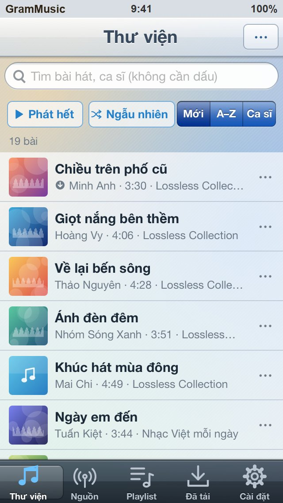

GramMusic
Nghe nhạc từ Telegram trên iPhone / iPad chạy iOS 5 và iOS 6 đã jailbreak — FLAC, lời bài hát chạy theo nhạc, điều khiển ngay trên màn hình khoá.
Bản 1.0.4Nguồn Cydia: https://itovn.github.io/GramMusic/cydia/
Giao diện

Thư viện, tìm không dấu Nguồn: Telegram và nhạc trên máy
Nguồn: Telegram và nhạc trên máy Đang phát FLAC, lời chạy theo nhạc
Đang phát FLAC, lời chạy theo nhạcẢnh minh hoạ với dữ liệu mẫu.
Tính năng
Thư viện từ TelegramTự tìm mọi bài hát trong Tin nhắn đã lưu, nhóm, kênh của tài khoản; tìm không dấu, xếp theo tên / ca sĩ; ẩn / hiện từng nguồn, thêm kênh công khai; nhóm có chủ đề nghe theo từng chủ đề; playlist, Yêu thích, Nghe gần đây.
FLAC, Opus, OGGNhạc lossless phát được trên iOS 5 / 6: FLAC (cả hi-res 24 bit / 96–192 kHz), OGG Vorbis, Opus — app tự giải mã, tua được ngay; hiện định dạng, tần số, bit, bitrate của tệp.
Lời bài hátLời chạy theo nhạc (LRCLIB): tô dòng đang hát, tự cuộn, chạm một dòng để tua. Bật trong Cài đặt của app.
Màn hình khoáTweak GramLockControl đi kèm: lời đang hát, thanh tiến trình kéo để tua, nút bài trước / phát / bài sau ngay trên màn hình khoá — iOS 5 / 6 vốn không có cho app ngoài. Bật / tắt trong Cài đặt của iPhone.
Phát ngay, tiết kiệm mạngBấm là nghe, tua ngay cả tệp 100 MB: chỉ tải trước một đoạn phía trước chỗ đang nghe (chỉnh được), tạm dừng thì thôi tải; bài nghe trọn giữ lại để lần sau khỏi tải; tải về máy để nghe không cần mạng.
Nhạc trên máyBài trong app Nhạc và tệp nhạc chép vào máy (iFile, Filza…) — cả FLAC, OGG, Opus.
MTProxy, SOCKS5, DNS mã hoáDùng được khi nhà mạng chặn Telegram (MTProxy thường, dd, ee fake-TLS); tên miền tra qua DNS mã hoá (DoH / DoT).
Giao diện iOS 6Kết hợp hiệu ứng kính trong; chế độ tối, tự đổi theo giờ; phát nền, tai nghe, cuộc gọi đến, hẹn giờ tắt.
Cài đặt
1. Thêm nguồn CydiaMở Cydia → Nguồn → Sửa → Thêm, nhập
https://itovn.github.io/GramMusic/cydia/ (hoặc chạm nút «Thêm nguồn vào Cydia» ở trên).2. Cài GramMusicTìm «GramMusic» → Cài đặt → Xác nhận. Xong bấm «Restart SpringBoard» (để có điều khiển trên màn hình khoá).
3. Đăng nhậpMở GramMusic, nhập số điện thoại, mã Telegram gửi về (và mật khẩu 2 lớp nếu có) — app tự quét nhạc trong tài khoản. Mạng chặn Telegram thì chạm «Proxy» để dán link MTProxy.
Lời bài hát: GramMusic → Cài đặt → Lời bài hát. Màn hình khoá: Cài đặt của iPhone → GramLockControl.
Cập nhật: từ bản 1.0.4 app tự báo khi có bản mới (hoặc GramMusic → Cài đặt → Phiên bản) và tự cài — chỉ cài gói có chữ ký số của người phát hành. Bản 1.0.3 trở về trước: cập nhật qua Cydia một lần.
Máy chạy được
iOS 5.0 – 6.1.x đã jailbreak (cần MobileSubstrate, PreferenceLoader): iPhone 4, 4S, 5 · iPad 1, 2, 3, 4, mini 1 · iPod touch 4, 5. Đã thử trên iPhone 5 (iOS 6.1.4), iPad 1 (iOS 5.1.1).
Mã nguồn
Mã nguồn mở — GPL-3.0github.com/itovn/GramMusic · lõi Rust (MTProto, thư viện grammers), giao diện Objective-C / UIKit. Cùng nền với GramMini.
GramMusic là ứng dụng không chính thức, dùng Telegram API; không phải sản phẩm của Telegram.
Hỏi đáp, báo lỗi: nhóm Telegram t.me/tivikit
Hỏi đáp, báo lỗi: nhóm Telegram t.me/tivikit